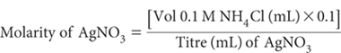
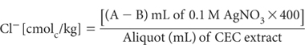
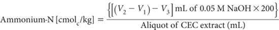
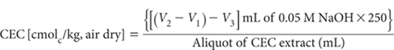
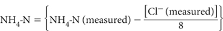

When segmented flow or distillation equipment is unavailable, a titration finish can be used for the estimation of NH4+ and Cl–, when determining CEC by Methods 15B1, 15B2, 15B3 and 15C1 in particular. Procedures are based on the formol titration of NH4+ and the Ag/AgCl reaction for Cl– (Tucker and Beatty 1974b). Modifications to the formol titration for CEC by NH4OAc at pH 7 (Methods 15D1 and 15D2) are given in Note 3.
Formol Reagent
Mix 500 mL deionised water with 500 mL of filtered (if necessary) 35% formalin – commercial formaldehyde (CH2O2) in water-methanol (CH3OH) mixture – and adjust to pH 8.2 with NaOH. Store in the dark in a stoppered bottle; periodically check and adjust pH, which may fall on long storage.
Aqueous Acetone
Mix one part of acetone (C3H6O; commercial) with two parts deionised water. The acetone is employed to sharpen the pH inflection corresponding to the end point of the formol titration. Consequently, it should not contain any free acid.
Sodium Hydroxide Solution (NaOH)
Concentration may be varied to suit equipment and the nature of samples. For an auto-titrator with a 2.5 mL burette, a strength around 0.05 M NaOH is suitable. For a 10 mL manual burette, preferred strength is about 0.025 M NaOH. A concentration up to 0.2 M NaOH may be required for a micro-burette. Prepare from 45% NaOH solution and standardise (Method 4D1).
Silver Nitrate Solution (AgNO3)
Concentration required will vary with equipment and nature of samples. For an auto-titrator with 2.5 mL burette, use 0.1 M AgNO3, prepared by dissolving 16.99 g AgNO3 and diluting to 1 L with deionised water. For a 10 mL manual burette, use 0.02 M AgNO3, prepared by dissolving 3.40 g AgNO3 and diluting to 1 L with deionised water. Standardise against standard NH4Cl – see procedure for Cl– (this method).
0.1 M Ammonium Chloride Standard
1 L contains 1.4 g NH4-N and 3.545 g Cl– ≡ 100 mmolc of both NH4-N and Cl–.
Dissolve 5.3491 g pure, dry ammonium chloride (NH4Cl) and make to 1 L in a volumetric flask with boiled (CO2 free) deionised water. Confirm NH4-N concentration by Method 7A1 or 7A2.
0.02 M Ammonium Chloride Standard
1 L contains 20 mmolc of both NH4-N and Cl–.
Dilute 100 mL 0.1 M NH4Cl standard with CO2-free deionised water and make to 500 mL in a volumetric flask.
Calcium-Potassium Nitrate-Nitric Acid Solution
Prepare as for Method 15I3.
Chloride Titration Medium
Sprinkle 0.3 g sodium carboxymethylcellulose (7.0–7.5% Na) over the surface of 30 mL of deionised water and gently boil to dissolve. Add this solution to 1.0 L deionised water, mix and add 0.5 mL HNO3. The function of this reagent, particularly the carboxymethylcellulose, is to improve the indicating electrode response time by keeping the AgCl precipitate as a colloid. (Polyvinyl alcohol can also be used). Add one crystal of thymol to prevent mould growth.
Prepare apparatus as described for Method 5A1 except that (unless otherwise recommended by the manufacturer) a mixture of one part of Ca-KNO3-HNO3 solution and two parts of Cl– Titration Medium should be substituted for saturated KNO3 in the outer compartment of the double-junction calomel reference electrode (Note 1).
Next standardise the AgNO3 solution (usually 0.1 M or 0.02 M) against 0.1 M NH4Cl standard. (If exactly 0.1 M AgNO3, 1 mL is equivalent to 3.545 mg of Cl–.) Dilute with 10 mL Cl– Titration Medium and, if required, add deionised water.

Make appropriate adjustments if NH4Cl differs from 0.1 M.
Determine Cl– concentration in leachates held for CEC determination by taking a suitable aliquot (5 to 10 mL). Dilute with 10 mL of Cl– Titration Medium (plus deionised water if required) and titrate with AgNO3 (standardised). End point corresponds to approximately 267 mV. Subsequent titrations with unknowns should be terminated at the end-point voltage, and the volume of AgNO3 recorded (mL). A blank determination of the Ca-KNO3-HNO3 solution plus Cl– Titration Medium should also be made with each batch.

where A = titre of AgNO3 for sample; and B = titre of AgNO3 for blank.
Make appropriate adjustments to this calculation should molarity of AgNO3 vary from 0.1 M. For example, if 0.02 M AgNO3, the factor is 80 instead of 400.
Procedure for Ammonium (Formol Titration; Notes 2, 3 and 4)
Transfer an accurate aliquot of leachate (5 to 10 mL) into a titration vessel and, while stirring, add 8 mL Formol Reagent and 50 mL Aqueous Acetone. Insert pH electrodes and temperature compensator and note pH when steady; the pH should be more acidic than pH 5. Titrate with standardised NaOH (in the absence of CO2 – flow N2 if available) to pH 5.0. Note burette reading (V1; mL) then continue titrating to pH 8.2 (V2; mL). Record volume of standard NaOH (V2 – V1; mL) used.
Run a method blank in a similar way, using an identical aliquot of Ca-KNO3-HNO3 leaching solution and note volume (mL) of standard NaOH for titration between pH 5.0 and 8.2 (V3; mL). This method blank may have a small positive value. Upon completion of this titration, add a known volume (5–10 mL) of 0.02 M NH4Cl to the titrated liquid and re-titrate to confirm the standardisation of the NaOH titrant and the optimum end point.

where
V1, V2 and V3 are as earlier defined.
Make appropriate adjustments to this calculation should molarity of NaOH vary from 0.05 M.
The CEC corresponds to the difference between the NH4-N and Cl– concentrations in the same sample, both expressed as cmolc/kg; i.e.
CEC[cmolc/kg] = NH4-N Cl–
Should for any reason the soil/final CEC leachate ratio not be 1:40, this must be factored into the before-mentioned calculations.
Report CEC (cmolc/kg), expressed on an oven-dry basis. Use the air-dry moisture to oven-dry moisture ratio to convert to an oven-dry concentration. Refer to Method 2A1 for guidance with regard to this soil moisture calculation.
1. A double junction electrode prevents leakage of the KCl electrolyte from the inner compartment into the titration medium. The secondary salt bridge will eventually be contaminated by KCl and its intended function as a secondary salt-bridge corrupted. Avoid by frequent replacement of electrolyte in the outer compartment of the double-junction electrode. Alternatively, use a mercury/mercurous sulfate electrode as indicated in Method 5A1.
2. To ensure the formol titration is quantitative, a large excess of formaldehyde is required. Moreover, to avoid any possibility of solution alkalinity caused by reaction of the displacing solution with soil, the Ca(NO3)2 + KNO3 solution is collected into dilute HNO3. The titre between pH 5.0 and 8.2 corresponds to the total NH4 + NH3, when corrected by the blank titre of an aliquot of Ca(NO3)2 – KNO3 – HNO3 solution.
3. If using the formol titration for CEC by ammonium acetate at pH 7, precautions against alkalinity of the NaCl solution should be taken. Usually 1 to 2 mL of 0.01 M acid addition should reduce pH of the aliquot to <5.0. Otherwise proceed in a similar way to that described for Methods 15B1, 15B2, 15B3 and 15C1 except that the reagent blank is 1 M NaCl and CEC calculation is as follows:

4 Free NH3 is present in NH4Cl solutions used for displacing exchangeable cations. It is highest in Method 15C1 where the NH3/NH4 ratio approximates to 1:8. In such cases the true NH4-N concentration can be calculated by:

For Methods 15B1, 15B2 and 15B3, and for most soils analysed by Method 15C1, this correction is unnecessary as it is less than the error of the determination. It may be warranted for precise studies involving Method 15C1 on soils that retain large volumes of Extracting Solution, such as strongly swelling clays and highly organic soils.